- Introduction to Active Directory
- Fundamentals
- Structure
- Terminology
- Object
- Attributes
- Schema
- Domain
- Forest
- Tree
- Container
- Leaf
- Global Unique Identifier (GUID)
- Security Principals
- Security Identifier (SID)
- Distinguished Name (DN)
- Relative Distinguished Name (RND)
- sAMAccountName
- userPrincipalName
- FSMO Roles
- Global Catalog
- Read-Only Domain Controller (RODC)
- Replication
- Service Principal Name (SPN)
- Group Policy Object (GPO)
- Access Control List (ACL)
- Access Control Entries (ACEs)
- Discretionary Access Control List (DACL)
- System Access Control Lists (SACL)
- Fully Qualified Domain Name (FQDN)
- Tombstone
- AD Recycle Bin
- SYSVOL
- AdminSDHolder
- dsHeuristics
- adminCount
- AD Users and Computer (ADUC)
- ADSI Edit
- sIDHistory
- NTDS.DIT
- MSBROWSE
- AD Objects
- AD Functionality
- Protocols
- Users
- Groups
- Rights and Privileges
- Security
- General AD Hardening Measures
- Microsoft Local Administrator Password Solution (LAPS)
- Audit Policy Settings (Logging and Monitoring)
- Group Policy Security Settings
- Update Management (SCCM/WSUS)
- Group Managed Service Accounts (gMSA)
- Security Groups
- Account Separation
- Password Complexity Policies + Passphrases + 2FA
- Limiting Domain Admin Accout Usage
- Periodically Auditing and Removing Stale Users and Objects
- Auditing Permissions and Access
- Audit Policies & Logging
- Using Restricted Groups
- Limiting Server Roles
- Limiting Local Admin and RDP Rights
- More Best Practices
- General AD Hardening Measures
- Group Policy
- Fundamentals
Introduction to Active Directory
Active Directory (AD) is a directory service for Windows network environments. It is a distributed, hierarchical structure that allows for centralized management of an organization's resources, including users, computers, groups, network devices, file shares, group policies, devices and trusts. AD provides authentication and authorization functions within a Windows domain environment. It has come under increasing attack in recent years. It is designed to be backward-compatible, and many features are arguably not "secure by default", and it can be easily misconfigured. This weakness can be leveraged to move laterally and vertically within a network and gain unauthorized access. AD is essentially a sizeable read-only database accessible to all users within the domain, regardless of their privilege level. A basic AD user account with no added privileges can enumerate most objects within AD. This fact makes it extremely important to properly secure an AD environment because ANY user account, regardless of their privilege level, can be used to enumerate the domain and hunt for misconfigurations and flaws thoroughly. Also, multiple attacks can be performed with only a standard domain user accout, showing the importance of a defense-in-depth strategy and careful planning focusing on security and hardening AD, network segmentation, and least privilege.
AD makes information easy to find and use for admins and users. AD is highly scalable, supports millions of objects per domain, and allows the creation of additional domains as an organization grows.
Fundamentals
Structure
AD is arranged in a hierarchical tree structure, with a forest at the top containing one or more domains, which can themselves have nested subdomains. A forest is the security within which all objects are under administrative control. A forest may contain multiple domains, and a domain may include further child or sub-domains. A domain is a structure within which contained objects (users, computers, groups) are accessible. It has many built-in Organizational Units (OUs), such as "Domain Controllers", "Users", "Computers", and new OUs can be created as required. OUs may contain objects and sub-OUs, allowing for the assignment of different group policies.
At a very simplistic high level, an AD structure may look as follows:
INLANEFREIGHT.LOCAL/
├── ADMIN.INLANEFREIGHT.LOCAL
│ ├── GPOs
│ └── OU
│ └── EMPLOYEES
│ ├── COMPUTERS
│ │ └── FILE01
│ ├── GROUPS
│ │ └── HQ Staff
│ └── USERS
│ └── barbara.jones
├── CORP.INLANEFREIGHT.LOCAL
└── DEV.INLANEFREIGHT.LOCAL
Here you could say that INLANEFREIGHT.LOCAL is the root domain and contains the subdomains ADMIN.INLANEFREIGHT.LOCAL, CORP.INLANEFREIGHT.LOCAL, and DEV.INLANEFREIGHT.LOCAL as well as the other objects that make up a domain such as users, groups, computers, and more as you will see in detail below. It is common to see multiple domains (or forests) linked together via trust relationships with another domain/forest than recreate all new users in the current domain. Domain trusts can introduce a slew of security issues if not appropriately administered.
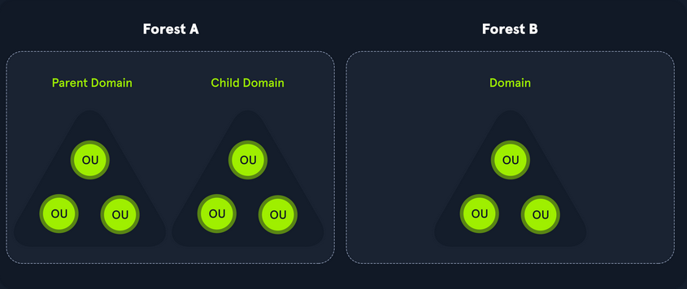
The graphic below shows two forests, INLANEFREIGHT.LOCAL and FREIGHTLOGISTICS.LOCAL. The two-way arrow represents a bidirectional trust between the two forests, meaning that users in INLANEFREIGHT.LOCAL can access resources in FREIGHTLOGISTICS.LOCAL and vice versa. You can also see multiple child domains under each root domain. In this example, you can see that the root domain trusts each of the child domains, but the child domains in forest A do not necessarily have trusts established with the child domains in forest B. This means that a user that is part of admin.dev.freightlogistics.local would not be able to authenticate to machines in the wh.corp.inlanefreight.local domain by default even though a bidirectional trust exists between the top-level inlanefreight.local and freightlogistics.local domains. To allow direct communication from admin.dev.freightlogistics.local and wh.corp.inlanefreight.local another trust would need to be set up.
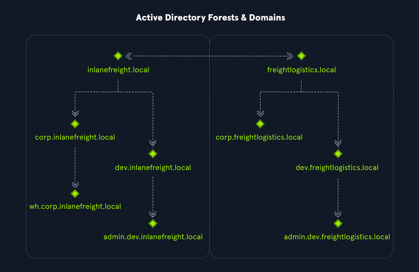
Terminology
Object
... can be defined as ANY resource present within an AD environment such as OUs, printers, users, domain controller, etc.
Attributes
Every object in AD has an associated set of attributes used to define characteristics of the given object. A computer object contains attributes such as the hostname and DNS name. All attributes in AD have an associated LDAP name that can be used when performing LDAP queries, such as displayName for Full Name and given name for First Name.
Schema
The AD schema is essentially the blueprint of any enterprise environment. It defines what types of objects can exist in the AD database and their associated attributes. It lists definitions corresponding to AD objects and holds information about each object. For example, users in AD belong to the class "user", and computer objects to "computer", and so on. Each object has its own information that are stored in Attributes. When an object is created from a class, this is called instantiation, and an object created from a specific class is called an instance of that class. For example, if you take the computer RDS01. This computer object is an instance of the "computer" class in AD.
Domain
... is a logical group of objects such as computers, users, OUs, grous, etc. You can think of each domain as a different city within a state or country. Domains can operate entirely independently of one another or be connected via trust relationships.
Forest
... is a collection of AD domains. It is the topmost container and contains all of the AD objects introducec below, including but not limited to domains, users, groups, computers, and Group Policy objects. A forest can contain one or multiple domains and be thought of as a state in the US or a country within the EU. Each forest operates independently but may have various trust relationships with other forests.
Tree
... is a collection of AD domains that begins at a single root domain. A forest is a collection of AD trees. Each domain in a tree shares a boundary with the other domains. A parent-child trust relationship is formed when a domain is added under another domain in a tree. Two trees in the same forest cannot share a name. Say you have two trees in an AD forest: inlanefreight.local and ilfreight.local. A child domain of the first would be corp.inlanefreight.local while a child domain of the second could be corp.ilfreight.local. All domains in a tree share a standard Global Catalog which contains all information about objects that belong to the tree.
Container
Container objects hold other objects and have a defined place in the directory subtree hierarchy.
Leaf
Leaf objects do not contain other objects and are found at the end of the subtree hierarchy.
Global Unique Identifier (GUID)
a GUID is a unique 128-bit value assigned when a domain user or group is created. This GUID value is uniqu across the enterprise, similar to a MAC address. Every single object created by AD is assigned a GUID, not only user and group objects. The GUID is stored in the ObjectGUID attribute. When querying for an AD object, you can query for its objectGUID value using PowerShell or search for it by specifying its distinguished name, GUID, SID, or SAM account name. GUIDs are used by AD to identify objects internally. Searching in AD by GUID value is probably the most accurate and reliable way to find the exact object you are looking for, especially if the global catalog may contain similar matches for an object name. Specifying the ObjectGUID value when performing AD enumeration will ensure that you get the most accurate results pertaining to the object you are searching for information about. The ObjectGUID property never changes and is associated with the object for as long as that object exists in the domain.
Security Principals
... are anything that the OS can authenticate, including users, computers, accounts, or even threads/processes that run in the context of a user or computer account. In AD, security principals are domain objects that can manage access to other resources within the domain. You can also have local user accounts and security groups used to control access to resources on only that specific computer. These are not managed by AD but rather by the Security Accouns Manager (SAM).
Security Identifier (SID)
... is used as a unique identifier for a security principal or security group. Every account, group, or process has its own unique SID, which, in an AD environment, is issued by the domain controller and stored in a secure database. A SID can only be used once. When a user logs in, the system creates an access token for them which contains the user's SID, the rights they have been granted, and the SIDs for any groups that the user is a member of. This token is used to check rights whenever the user performs an action on the computer. There are also well-known SIDs that are used to identify generic users and groups. These are the same across all OS.
Distinguished Name (DN)
... describes the full path to an object in AD (such as cn=bjones, ou=IT, ou=Employees, dc=inlanefreight, dc=local). In this example, the user bjones works in the IT department of the company Inlanefreight, and his account is created in an OU that holds accounts for company employees. The Common Name (CN) bjones is just one way the user object could be searched for or accessed within the domain.
Relative Distinguished Name (RND)
... is a single component of the DN that identifies the object as unique from other objects at the current level in the naming hierarchy. In your example, bjones is the Relative Distinguished Name of the object. AD does not allow two objects with the same name under the same parent container, but there can be two objects with the same RDNs that are still unique in the domain because they have different DNs. For example, the object cn=bjones,dc=dev,dc=inlanefreight,dc=local would be recognized as different from cn=bjones,dc=inlanefreight,dc=local.
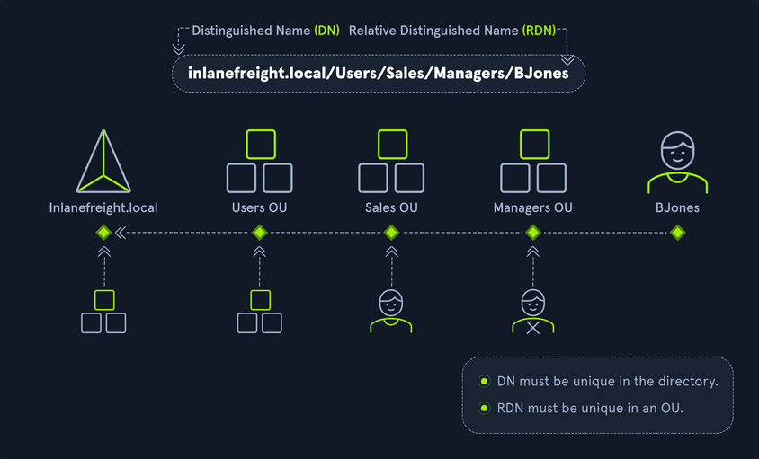
sAMAccountName
... is the user's logon name. Here it would just be bjones. It must be a unique value and 20 or fewer chars.
userPrincipalName
... attribute is another way to identify users in AD. This attribute consists of a prefix and a suffix in the format of bjones@inlanefreight.local. This attribute is not mandatory.
FSMO Roles
In the early days of AD, if you had multiple DCs in an environment, they would fight over which DC gets to make changes, and sometimes changes would not be made properly. Microsoft then implemented "last writer wins", which could introduce its own problems if the last change breaks things. They then introduced a model in which a single "master" DC could apply changes to the domain while the others merely fulfilled authentication requests. This was a flawed design because if the master DC went down, no changes could be made to the environment until it was restored. To resolve this single point of failure model, Microsoft separated the various responsibilities that a DC can have into Flexible Single Master Operation (FSMO) roles. These give DCs the ability to continue authenticating users and granting permissions without interruption. There are five FSMO roles: Schema Master and Domain Naming Master (one of each per forest), Relative ID (RID) Master (one per domain), Primary Domain Controller (PDC) Emulator (one per domain), and Infrastructure Master (one per domain). All five roles are assigned to the first DC in the forest root domain in a new AD forest. Each time a new domain is added to a forest, only the RID Master, PDC Emulator, and Infrastructure Master roles are assigned to the new domain. FSMO roles are typically set when domain controllers are created, but sysadmins can transfer these roles if needed. These roles help replication in AD to run smoothly and ensure that critical services are operating correctly.
Global Catalog
... is a domain that stores copies of ALL objects in an AD forest. The GC stores a full copy of all objects in the current domain and a partial copy of objects that belong to other domains in the forest. Standard domain controllers hold a complete replica of objects belonging to its domain but not those of different domains in the forest. The GC allows both users and apps to find information about any objects in ANY domain in the forest. GC is a feature that is enabled on a domain controller and performs the following functions:
- Authentication
- Object Search
Read-Only Domain Controller (RODC)
... has a read-only AD database. No AD account passwords are cached on an RODC. No changes are pushed out via an RODC's AD database, SYSVOL, or DNS. RODCs also include a read-only DNS server, allow for administrator separation, reduce replication traffic in the environment, and prevent SYSVOL modifications from being replicated.
Replication
... happens in AD when AD objects are updated and transferred from one DC to another. Whenever a DC is added, connection objects are created to manage replication between them. These connections are made by the Knowledge Consistency Checker (KCC) service, which is present on all DCs. Replication ensures that changes are synchronized with all other DCs in a forest, helping to create a backup in case on DC fails.
Service Principal Name (SPN)
... uniquely identifies a service instance. They are used by Kerberos authentication to associate an instance of a service with a logon account, allowing a client application to request the service to authenticate an account without needing to know the account name.
Group Policy Object (GPO)
... are virtual collections of policy settings. Each GPO has a unique GUID. A GPO can contain local file system settings or AD settings. GPO settings can be applied to both user and computer objects. They can be applied to all users and computers within the domain or defined more granularly at the OU level.
Access Control List (ACL)
... is the ordered collection of Access Control Entries (ACEs) that apply to an object.
Access Control Entries (ACEs)
Each ACE in an ACL identifies a trustee (user account, group account, or logon session) and lists the access rights that are allowed, denied, or audited for the given trustee.
Discretionary Access Control List (DACL)
... defines which security principles are granted or denied access to an object; it contains a list of ACEs. When a process tries to access a securable object, the system checks the ACEs in the object's DACL to determine whether or not to grant access. If an object does not have a DACL, then the system will grant full access to everyone, but if the DACL has no ACE entries, the system will deny all access attempts. ACEs in the DACL are checked in sequence until a match is found that allows the requested rights until access is denied.
System Access Control Lists (SACL)
Allows for admins to log access attempts that are made to secured objects. ACEs specify the types of access attempts that cause the system to generate a record in the security event log.
Fully Qualified Domain Name (FQDN)
... is the complete name for a specific computer or host. It is written with the hostname and domain name in the format [host name].[domain name].[tld]. This is used to specify an object's location in the tree hierarchy of DNS. The FQDN can be used to locate hosts in an AD without knowing the IP address, much like when browsing to a website such as google.com instead of typing the associated IP address. An example would be the host DC01 in the domain INLANEFREIGHT.LOCAL. The FQDN here would be DC01.INLANEFREIGHT.LOCAL.
Tombstone
... is a container object in AD that holds deleted AD objects. When an object is deleted from AD, the object remains for a set period of time known as the Tombstone Lifetime, and the isDeleted attribute is set to TRUE. Once an object exceeds the Tombstone Lifetime, it will be entirely removed. Microsoft recommends a tombstone lifetime of 180 days to increase the usefulness of backups, but this value may differ across environments. Depending on the DC OS version, this value will default to 60 or 180 days. If an object is deleted in a domain that does not have an AD Recycle Bin, it will become a tombstone object. When this happens, the object is stripped of most of its attributes and placed in the Deleted Objects container for the duration of the tombstoneLifetime. It can be recovered, but any attributes that were lost can no longer be recovered.
AD Recycle Bin
... was introduced to facilitate the recovery of deleted AD objects. This made it easier for admins to restore objects, avoiding the need to restore from backups, restarting AD DS, or rebooting a DC. When the AD Recycle Bin is enabled, any deleted objects are preserved for a period of time, facilitating restoration if needed. Sysadmins can set how long an object remains in a deleted, recoverable state. If this is not specified, the object will be restorable for a default value of 60 days. The biggest advantage of using the AD Recycle Bin is that most of a deleted object's attributes are preserved, which makes it far easier to fully restore a deleted object to its previous state.
SYSVOL
The SYSVOL folder, or share, stores copies of public files in the domain such as system policies, Group Policy settings, logon/logoff scripts, and often contains other types of scripts that are executed to perform various tasks in the AD environment. The contents of the SYSVOL folder are replicated to all DCs within the environment using File Replication Services (FRS).
AdminSDHolder
The AdminSDHolder object is used to manage ACLs for members of built-in groups in AD marked as privileged. It acts as a container that holds the Security Descriptor applied to members of protected groups. The SDProp (SD Propagator) process runs on a schedule on the PDC Emulator DC. When this process runs, it checks members of protected groups to ensure that the correct ACL is applied to them. It runs every hour by default. For example, suppose an attacker is able to create a malicious ACL entry to grant a user certain rights over a member of the Domain Admins group. In that case, unless they modify other settings in AD, these rights will be removed when the SDProp process runs on the set interval.
dsHeuristics
The dsHeuristics attribute is a string value set on the Directory Service object used to define multiple forest-wide configuration settings. One of these settings is to exclude built-in groups from the Protected Groups list. Groups in this list are protected from modification via the AdminSDHolder object. If a group is excluded via the dsHeuristics attribute, then any changes that affect it will not be reverted when the SDProp process runs.
adminCount
The adminCount attribute determines whether or not the SDProp process protects a user. If the value is set to 0 or not specified, the user is not protected. If the attribute is set to 1, the user is protected. Attackers will often look for accounts with the adminCount attribute set to 1 to target in an internal environment. These are often privileged accounts and may lead to further access or full domain compromise.
AD Users and Computer (ADUC)
... is a GUI console commonly used for managing users, groups, computers, and contacts in AD. Changes made in ADUC can be done via PowerShell as well.
ADSI Edit
ADSI Edit is a GUI tool used to manage objects in AD. It provides access to far more than is available in ADUC and can be used to set or delete any attribute available on an object, add, remove, and move objects as well. It is a powerful tool that allows a user to access AD at a much deeper level. Great care should be taken when using this tool, as changes here could cause major problems in AD.
sIDHistory
This attribute holds any SIDs that an object was assigned previously. It is usually used in migrations so a user can maintain the same level of access when migrated from one domain to another. This attribute can potentially be abused if set insecurely, allowing an attacker to gain prior elevated access that an account had before a migration if SID filtering is not enabled.
NTDS.DIT
The NTDS.DIT file can be considered the heart of AD. It is stored on a DC at C:\Windows\NTDS\ and is a database that stores AD data such as information about user and group objects, group membership, and, most important to attackers and pentesters, the password hashes for all users in the domain. Once full domain compromise is reached, an attacker can retrieve this file, extract the hashes, and either use them to perform a pass-the-hash attack or crack them offline to access additional resources in the domain. If the setting "Store password with reversible encryption" is enabled, then the NTDS.DIT will also store the cleartext passwords for all users created or who changed their passwords after this policy was set. While rare, some organizations may enable this setting if they use apps or protocols that need to use a user's existing password for authentication.
MSBROWSE
... is a Microsoft networking protocol that was used in early versions of Windows-based local area networks to provide browsing services. It was used to maintain a list of resources, such as shared printers and files, that were available on the network, and to allow users to easily browse and access these resources.
In older versions of Windows you could use nbtstat -A ip-address to search for the Master Browser. If you see MSBROWSE it means that's the Master Browser. Additionally you could use nltest utility to query a Windows Master Browser for the names of the DCs.
Today, MSBROWSE is largely obsolete and is no longer in widespread use. Modern Windows-based LANs use the Server Message Block (SMB) protocol for file and printer sharing, and the Common Internet File System (CIFS) protocol for browsing services.
AD Objects
Users
These are the users within the organization's AD. Users are considered leaf objects, which means that they cannot contain any other objects within them. An user object is considered a security principal and has a security identifier and a global unique identifier. User objects have many possible attributes, such as their display name, last login time, date of last password change, email address, account description, manager, address, and more. Depending on how a particular AD envinronment is set up, there can be over 800 possible user attributes when accounting for all possible attributes. They are a crucial target for attackers since gaining access to even a low privileged user can grant access to many objects and resources and allow for detailed enumeration of the entire domain (or forest).
Contacts
A contact object is usually used to represent an external user and contains informational attributes such as first name, last name, email address, telephone number, etc. They are leaf objects and are not security principals, so they don't have a SID, only a GUID. An example would be a contact card for a third-party vendor or a customer.
Printers
A printer object points to a printer accessible within the AD network. Like a contact, a printer is a leaf object and not a security principal, so it only has a GUID. Printers have attributes such as the printer's name, driver information, port number, etc.
Computers
A computer object is any computer joined to the AD network. Computers are leaf objects because they do not contain other objects. However, they are considered security principals and have a SID and a GUID. Like users, they are prime targets for attackers since full administrative access to a computer grants similar rights to a standard domain user and can be used to perform the majority of the enumeration tasks that a user account can.
Shared Folders
A shared folder object points to a shared folder on a specific computer where the folder resides. Shared folders can have stringent access control applied to them and can either be accessible to everyone, open to only authenticated users, or be locked down to only allow certain users/groups access. Anyone not explicitly allowed access will be denied from listing or reading its contents. Shared folders are not security principals and only have a GUID. A shared folder's attribute can include the name, location on the system, security access rights.
Groups
a group is considered a container object because it can contain other objects, including users, computers, and even other groups. A group is regarded as a security principal and has a SID and a GUID. In AD, groups are a way to manage user permissions and access to other securable objects. Say you want to give 20 help desk users access to tthe Remote Management Users group on a jump host. Instead of adding the users one by one, you could add the group, and the users would inherit the intended permissions via their membership in the group. In AD, you commonly see what are called "nested groups", which can lead to a user(s) obtaining unintended rights. Nested groups membership is something you see and often leverage during penetration tests. The tool BloodHound helps to discover attack paths within a network and illustrate them in a graphical interface. It is excellent for auditing group membership and unvovering/seeing the sometimes unintended impacts of nested group membership. Groups in AD can have many attributes, the most common being the name, description, membership, and other groups that the group belongs to. Many other attributes can be set.
OUs
... are containers that system administrators can use to store similar objects for ease of administration. OUs are often used for administrative delegation of tasks without granting a user account full administrative rights. For example, you may have a top-level OU called "Employees" and then child OUs under it for various departments such as "Marketing", "HR", "Finance", "Help Desk", etc. If an account were given the right to reset passwords over the top-level OU, this user would have the right to reset passwords for all users in the company. However, if the OU structure were such that specific departments were child OUs of the "Help Desk" OU, then any user placed in the "Help Desk" OU would have this right delegated to them if granted. Other tasks that may be delegated at the OU level include creating/deleting users, modifying group membership, managing Group Policy links, and performing password resets. OUs are very useful for managing Group Policy settings across a subset of users and groups within a domain. For example, you may want to set a specific policy for privileged service accounts so these accounts could be placed in a particular OU and then have a Group Policy object assigned to it, which would enforce this password policy on all accounts placed inside of it. A few OU attributes include its name, members, security settings, and more.
Domain
a domain is the structure of an AD network. Domains contain objects such as users and computers, which are organized into container objects: groups, and OUs. Every domain has its own separate database and sets of policies that can be applied to any and all objects within the domain. Some policies are set by default, such as the domain password policy. In contrast, others are created and applied based on the organization's need, such as blocking access to cmd.exe for all-non administrative users or mapping shared drives at log in.
Domain Controllers
... are essentially the brains of an AD network. They handle authentication requests, verify users on the network, and control who can access the various resources in the domain. All access requests are validated via the DC and privileged access requests are based on predetermined roles assigned to users. It also enforces security policies and stores information about every other object in the domain.
Sites
A site in AD is a set of compuers across one or more subnets connected using high-speed links. They are used to make replication across domain controllers run efficiently.
Built-In
In AD, built-in is a container that holds default groups in an AD domain. They are predefined when an AD domain is created.
Foreign Security Principals
A foreign security principal (FSP) is an object created in AD to represent a security principal that belongs to a trusted external forest. They are created when an object such as a user, group, or computer from an external forest is added to a group in the current domain. They are created automatically after adding a security principal to a group. Every foreign security principal is a placeholder object that holds the SID of the foreign object. Windows uses this SID to resolve to object's name via the trust relationship. FSPs are created in a specific container named ForeignSecurityPrincipals with a distinguished name like cn=ForeignSecurityPrincipals,dc=inlanefreight,dc=local.
AD Functionality
There are five Flexible Single Master Operation roles. These roles can be defined as follows:
| Role | Description |
|---|---|
| Schema Master | manages the read/write copy of the AD schema, which defines all attributes that can apply to an object in AD |
| Domain Naming Master | manages domain names and ensures that two domains of the the same name are not created in the same forest |
| Relative ID Master | assigns blocks of RIDs to other DCs within the domain that can be used for new objects; the RID master helps ensure that multiple objects are not assigned the same SID. Domain object SIDs are the domain SID combined with the RID number assigned to the object to make the unique SID |
| PDC Emulator | the host with this role would be the authoritive DC in the domain and respond to authentication requests, password changes, and manage Group Policy Objects (GPOs); the PDC Emulator also maintains time within the domain |
| Infrastructure Master | this role translates GUIDs, SIDs, and DNs between networks; this role is used in organizations with multiple domains in a single forest; helps them to communicate; if this role is not functioning properly, ACLs will show SIDs instead of fully resolved names |
Domain and Forest Functional Levels
Microsoft introduced functional levels to determine the various features and capabilities available in AD DS at the domain and forest level. They are also used to specify which Windows Server OS can run a DC in a domain or forest.
| Domain Functional Level | Featues Available | Supported DC OS |
|---|---|---|
| Windows 2000 native | universal groups for distribution and security groups, group nesting , group conversion, SID history | Windows Server 2008 R2, Windows Server 2008, Windows Server 2003, Windows 2000 |
| Windows Server 2003 | Netdom.exe domain management tool, lastLogonTimestamp attribute introduced, well-known users and computers containers, constrained delegation, selective authentication | Windows Server 2012 R2, Windwos Server 2012, Windows Server 2008 R2, Windows Server 2008, Windows Server 2003 |
| Windows Server 2008 | Distributed File System replication support, Advanced Encryption Standard support for the Kerberos protocol, fine-grained password policies | Windows Server 2012 R2, Windows Server 2012, Windows Server 2008 R2, Windows Server 2008 |
| Windows Server 2008 R2 | authentication mechanism assurance, managed service accounts | Windows Server 2012 R2, Windows Server 2012, Windows Server 2008 R2 |
| Windows Server 2012 | KDC support for claims, compound authentication, and Kerberos armoring | Windows Server 2012 R2, Windows Server 2012 |
| Windows Server 2012 R2 | extra protections for members of the Protected Users group, authentication policies, authentication policy silos | Windows Server 2012 R2 |
| Windows Server 2016 | smart card required for interactive logon new Kerberos features and new credential protection features | Windows Server 2019 and Windows Server 2016 |
A new functional level was not added with the release of Windows Server 2019. However, Windows Server 2008 functional level is the minimum requirement for adding Server 2019 DC to an environment. Also, the target domain has to use DFS-R for SYSVOL replication.
Forest functional levels have introduced a few key capabilties over the years:
| Version | Capabilities |
|---|---|
| Windows Server 2003 | saw the introduction of the forest trust, domain renaming, read-only DCs, and more |
| Windows Server 2008 | all new domains added to the forest default to the Server 2008 domain functional level; no additional new features |
| Windows Server 2008 R2 | AD Recycle Bin provides the ability to restore deleted objects when AD DS is running |
| Windows Server 2012 | all new domains added to the forest default to the Server 2012 domain functional level; no additional new features |
| Windows Server 2012 R2 | all new domains added to the forest default to the Server 2012 R2 functional level; no additional new features |
| Windows Server 2016 | privileged access management using Microsoft Identity Manager |
Trusts
A trust is used to establish forest-forest or domain-domain authentication, allowing users to access resources in another domain outside of the domain their account resides in. A trust creates a link between the authentication systems of two domains.
There a several trust types:
| Trust Type | Description |
|---|---|
| Parent-Child | domains within the same forest; the child domain has two-way transitive trust with the parent domain |
| Cross-link | a trust between child domains to speed up authentication |
| External | a non-transitive trust between two separate domains in separate forests which are not already joined by a forest trust; this type of trust utilizes SID filtering |
| Tree-root | a two-way transitive trust between a forest root domain and a new tree root domain; they are created by design when you set up a new tree root domain within a forest |
| Forest | a transitive trust between two forest root domains |
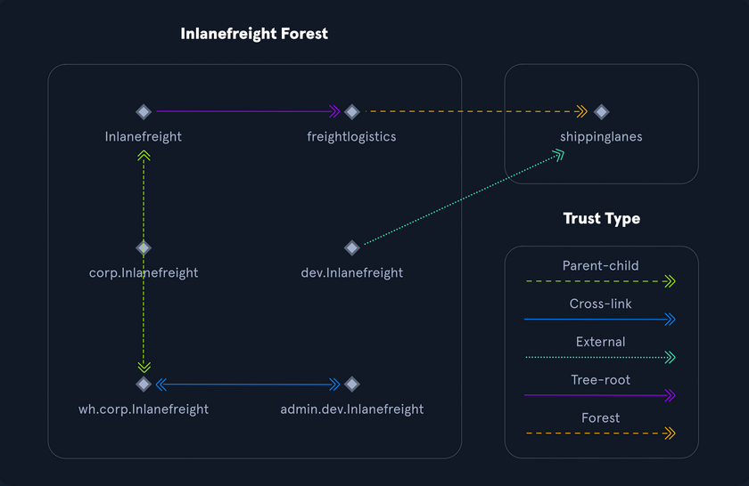
Trusts can be transitive or non-transitive:
- a transitive trust means that trust is extended to objects that the child domain trusts
- in a non-transitive trust, only the child domain itself is trusted
Trusts can be set up one-way or two-way
- in bidirectional trusts, users from both trusting domains can access resources
- in a one-way trust, only users in a trusted domain can access resources in a trusting domain, not vice-versa; the direction of trust is opposite to the direction of access
Often, domain trusts are set up improperly and provide unintended attack paths. Also, trusts set up for ease of use may not be reviewed later for potential security implications. Mergers and acquisitions can result in bidirectional trusts with acquired companies, unknowingly introducing risk into the acquiring company's environment. It is not uncommon to be able to perform an attack such as Kerberoasting against a domain outside the principal domain and obtain a user that has administrative access within the principal domain.
Protocols
Kerberos, DNS, LDAP, MSRPC
Kerberos
... has been the default authentication protocol for domain accounts since Windows 2000. Kerberos is an open standard and allows for interoperability with other systems using the same standard. When a user logs into their PC, Kerberos is used to authenticate them via mutual authentication, or both the user and the server verify their identity. Kerberos is a stateless authentication protocol based on tickets instead of transmitting user passwords over the network. As part of AD DS, DCs have a Kerberos Key Distribution Center (KDC) that issues tickets. When a user initiates a login request to a system, the client they are using to authenticate to requests a ticket from the KDC, encrypting the request with the user's password. If the KDC can decrypt the request using their password, it will create a Ticket Granting Ticket (TGT) and transmit it to the user. The user then presents its TGT to a DC to request a Ticket Granting Service (TGS) ticket, encrypted with the associated service's NTLM password hash. Finally, the client requests access to the required service by presenting the TGS to the application or service, which decrypts it with its password hash. If the entire process completes appropriately, the user will be permitted to access the requested service or application.
Kerberos Authentication Process
- When a user logs in, their password is used to encrypt a timestamp, which is sent to the KDC to verify the integrity of the authentication by decrypting it. The KDC then issues a TGT, encrypting it with the secret key of the KRBTGT account. This TGT is used to request service tickets for accessing network resources, allowing authentication without repeatedly transmitting the user's creds. This process decouples the user's creds from requests to resources.
- The KDC service on the DC checks the authentication service request, verifies the user information, and creates a TGT, which is delivered to the user.
- The user presents the TGT to the DC, requesting a TGS ticket for a specific service. This is the TGS-REQ. If the TGT is successfully validated, its data is copied to create a TGS ticket.
- The TGS is encrypted with the NTLM password hash of the service or computer account in whose context the service instance is running and is delivered to the user in the TGS_REP.
- The user presents the TGS to the service, and if it is valid, the user is permitted to connect to the resource (AP_REQ).
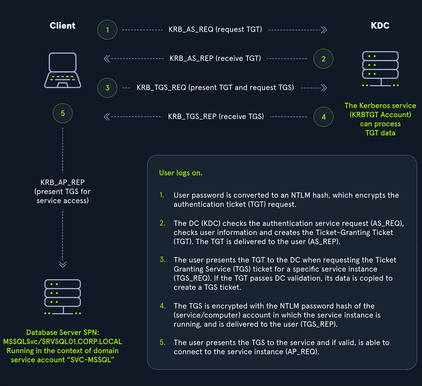
The Kerberos protocol uses port 88 (both TCP and UDP). When enumerating an AD environment, you can often locate DCs by performing port scans looking for open port 88 using nmap.
DNS
AD DS uses DNS to allow clients to locate DCs and for DCs that host the directory service to communicate amongst themselves. DNS is used to resolve hostnames to IP addresses and is broadly used across internal networks and the internet. Private internal networks use AD DNS namespaces to facilitate communications between servers, clients, and peers. AD maintains a database of services running on the network in the form of service records (SRV). These service records allow clients in an AD environment to locate services that they need, such as file server, printer, or DC. Dynamic DNS is used to make changes in the DNS database automatically should a system's IP address change. Making these entries manually would be very time-consuming and leave room for error. If the DNS database does not have the correct IP address for a host, clients will not be able to locate and communicate with it on the network. When a client joins the network, it locates the DC by sending a query to the DNS service, retrieving an SRV record from the DNS database, and transmitting the DC's hostname to the client. The client then uses this hostname to obtain the IP address of the DC. DNS uses TCO and UDP port 53. UDP port 53 is the default, but it falls back to TCP when no longer able to communicate and DNS messages are larger than 512 bytes.
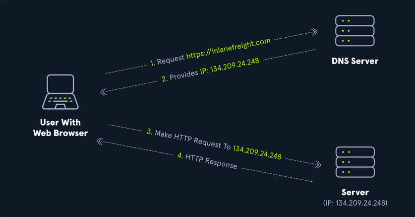
Forward DNS Lookup
You can perform a nslookup for the domain name and retrieve all DCs' IP addresses in a domain:
PS C:\htb> nslookup INLANEFREIGHT.LOCAL
Server: 172.16.6.5
Address: 172.16.6.5
Name: INLANEFREIGHT.LOCAL
Address: 172.16.6.5
Reverse DNS Lookup
If you would like to obtain DNS name of a single host using the IP address, you can to this as follows:
PS C:\htb> nslookup 172.16.6.5
Server: 172.16.6.5
Address: 172.16.6.5
Name: ACADEMY-EA-DC01.INLANEFREIGHT.LOCAL
Address: 172.16.6.5
Finding IP Address of a Host
If you would like to find the IP address of a single host, you can do this in reverse. You can do this with or without specifying the FQDN.
PS C:\htb> nslookup ACADEMY-EA-DC01
Server: 172.16.6.5
Address: 172.16.6.5
Name: ACADEMY-EA-DC01.INLANEFREIGHT.LOCAL
Address: 172.16.6.5
LDAP
AD supports Lightweight Directory Access Protocol for directory lookups. LDAP is an open-source and cross-platform protocol used for authentication against various directory services. The latest LDAP specification is Version 3, published as RFC 4511. A firm understanding of how LDAP works in an AD environment is crucial for attackers and defenders. LDAP uses port 389, and LDAP over SSL (LDAPS) communicates over port 636.
AD stores user account information and security information such as passwords and facilitates sharing this information with other devices on the network. LDAP is the language that applications use to communicate with other servers that provide directory services. In other words, LDAP is how systems in the network environment can "speak" to AD.
An LDAP session begins by first connecting to an LDAP server, also known as a Directory System Agent. The DC in AD actively listens for LDAP requests, such as security authentication requests.
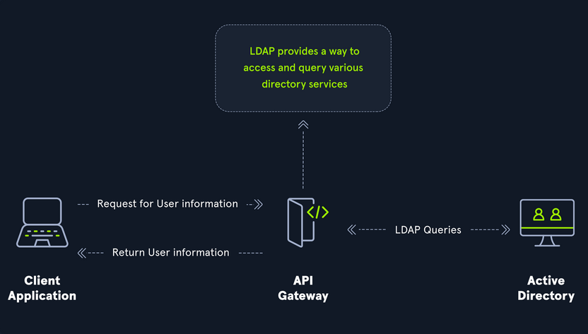
The relationship between AD and LDAP can be compared to Apache and HTTP. The same way Apache is a web server that uses HTTP protocol, AD is a directory server that uses the LDAP protocol.
While uncommon, you may come across organizations while performing an assessment that do not have AD but are using LDAP, meaning that they most likely use another type of LDAP server such as OpenLDAP.
AD LDAP Authentication
LDAP is set up to authenticate creds against AD using a "BIND" operation to set the authentication state for an LDAP session. There are two types of LDAP authentication:
- Simple Authentication
- This includes anonymous authentication, unauthenticated authenticationm and username/password authentication. Simple authentication means that a username and password create a BIND request to authenticate to the LDAP server.
- SASL Authentications
- The Simple Authentication and Security Layer framework uses other authentication services, such as Kerberos, to bind to the LDAP server and then uses this authentication service to authenticate to LDAP. The LDAP server uses the LDAP protocol to send an LDAP message to the authorizaton service, which initiates a series of challenge/response messages resulting in either successful or unsuccessful authentication. SASL can provide additional security due to the separation of authentication methods from application protocols.
MSRPC
MSRPC is Microsoft's implementation of Remote Procedure Call (RPC), an interprocess communication technique used for client-server model-based applications. Windows systems use MSRPC to access systems in AD using four key RPC interfaces.
| Interface Name | Description |
|---|---|
| lsarpc | a set of RPC calls to the Local Security Authority system which manages the local security policy on a computer, controls the audit policy, and provides interactive authentication services; LSARPC is used to perform management on domain security policies |
| netlogon | is a Windows process used to authenticate users and other services in the domain environment; it is a service that continuously runs in the background |
| samr | remote SAM provides management functionality for the domain account database, storing information about users and groups; IT admins use the protocol to manage users, groups, and computers by enabling admins to create, read, update, and delete information about security principles; attackers can use the samr protocol to perform reconnaissance about the internal domain using tools like BloodHound to visually map out the AD network and create "attack paths" to illustrate visually how administrative access or full domain compromise could be achieved; organizations can protect against this type of reconnaissance by changing a Windwos registry key to only allow admins to perform remote SAM queries, by default, all authenticated domain users can make these queries to gather a considerable amount of information about the AD domain |
| drsuapi | drsuapi is the Microsoft API that implements the Directory Replication Service Remote Protocol which is used to perform replication-related tasks across DCs in a multi-DC environment; attackers can utilize drsuapi to create a copy of the AD domain database file to retrieve password hashes for all accounts in the domain, which can then be used to perform Pass-the-Hash attacks to access more systems or cracked offline to obtain the cleartext password to log in to systems using remote management protocols such as RDP and WinRM |
NTLM Authentication
Aside from Kerberos and LDAP, AD uses several other authentication methods which can be used by apps and services in AD. These include LM, NTLM, NTLMv1, and NTLMv2. LM and NTLM here are the hash names, and NTLMv1 and NTLMv2 are authentication protocols that utilize the LM or NT hash.
Hash Protocol Comparison
| Hash / Protocol | Cryptographic Technique | Manual Authentication | Message Type | Trusted Third Party |
|---|---|---|---|---|
| NTLM | symmetric key cryptography | no | random number | DC |
| NTLMv1 | symmetric key cryptography | no | MD4 hash, random number | DC |
| NTLMv2 | symmetric key cryptography | no | MD4 hash, random number | DC |
| Kerberos | symmetric key cryptography & asymmetric cryptography | yes | encrypted ticket using DES, MD5 | DC / KDC |
LM
LAN Manager (LM/LANMAN) hashes are the oldest password storage mechanism used by the Windows OS. If in use, they are stored in the SAM database on a Windows host and the NTDS.DIT database on a DC. Due to significant security weaknesses in the hashing algorithm used for LM hashes, it has been turned off by default since Windows Vista / Server 2008. However, it is still common to encounter, especially in large environments where older systems are still used. Passwords using LM are limited to a maximum of 14 chars. Passwords are not case sensitive and are converted to uppercase before generating the hashed value, limiting the keyspace to a total of 69 chars making it relatively easy to crack these hashes.
Before hashing, a 14 char password is first split into two seven-char chunks. If the password is less than fourteen chars, it will be padded with NULL chars to reach the correct value. Two DES keys are created from each chunk. These chunks are then encrypted using the string KGS!@#$%, creating two 8-byte ciphertext values. These two values are then concatenated together, resulting in an LM hash. This hashing algorithm means that an attacker only needs to brute force seven chars twice instead of the entire fourteen chars, making it fast to crack LM hashes on a system with one or more GPUs. If a password is seven chars or less, the second half of the LM hash will always be the same value and could even be determined visually without even needed tools. The use of LM hashes can be disallowed using Group Policy. An LM hash takes the form of 299bd128c1101fd6.
NTHash (NTLM)
NT LAN Manager (NTLM) hashes are used on modern Windows systems. It is challenge-response authentication protocol and uses three messages to authenticate: a client first sends a NEGOTIATE_MESSAGE to the server, whose response is a CHALLENGE_MESSAGE to verify the client's identity. Lastly, the client responds with an AUTHENTICATE_MESSAGE. These hashes are stored locally in the SAM database or the NTDS.DIT database file on a DC. The protocol has two hashed password values to choose from to perform authentication: the LM hash and the NT hash, which is the MD4 hash of the little-endian UTF-16 value of the password. The algorithm can be visualized as: MD4(UTF-16-LE(password)).
NTLM Authentication Request
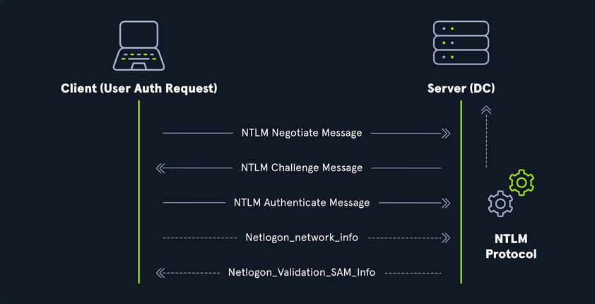
Even though they are considerably stronger than LM hashes, they can still be brute-forced offline relatively quickly. GPU attacks have shown that the entire NTLM 8 char keyspace can be brute-forced in under 3 hours. Longer NTLM hashes can be more challenging to crack depending on the password chosen, and even long passwords can be cracked using an offline dictionary attack combined with rules. NTLM is also vulnerable to the pass-the-hash attack, which means an attacker can use just the NTLM hash to authenticate to target systems where the user is a local admin without needing to know the cleartext value of the password.
An NT hash takes the form of b4b9b02e6f09a9bd760f388b67351e2b, which is the second half of the full NTLM hash. An NTLM hash looks like this:
Rachel:500:aad3c435b514a4eeaad3b935b51304fe:e46b9e548fa0d122de7f59fb6d48eaa2:::
- Rachel
- username
- 500
- the RID; 500 is known to be the administrator
- aad3c435b514a4eeaad3b935b51304fe
- is the LM hash and, if LM hashes are disabled on the system, can not be used for anything
- e46b9e548fa0d122de7f59fb6d48eaa2
- is the NT hash; this hash can either be cracked offline to reveal the cleartext value or used for a pass-the-hash attack
NTLMv1v (Net-NTLMv1)
The NTLM protocol performs a challenge/response between a server and client using the NT hash. NTLMv1 uses both the NT and the LM hash, which can make it easier to "crack" offline after capturing a hash using a tool such as Responder or via an NTLM relay attack. The protocol is used for network authentication, and the Net-NTLMv1 hash itself is created from a challenge/response algorithm. The server sends the client an 8-byte random number, and the client returns a 24-byte response. These hashes can not be used for pass-the-hash attacks. The algorithm looks as follows:
V1 Challenge & Response Algorithm
C = 8-byte server challenge, random
K1 | K2 | K3 = LM/NT-hash | 5-bytes-0
response = DES(K1,C) | DES(K2,C) | DES(K3,C)
NTLMv1 Hash Example
u4-netntlm::kNS:338d08f8e26de93300000000000000000000000000000000:9526fb8c23a90751cdd619b6cea564742e1e4bf33006ba41:cb8086049ec4736c
NTLMv1 was the building block for modern NTLM authentication. Like any protocol, it has flaws and is susceptible to cracking and other attacks.
NTLMv2 (Net-NTLMv2)
The NTLM2 protocol was created as a stronger alternative to NTLMv1. It has been the default in Windows since Sever 2000. It is hardened against certain spoofing attacks that NTLMv1 is susceptible to. NTLMv2 sends two responses to the 8-byte challenge received by the server. These responses contain a 16-byte HMAC-MD5 hash of the challenge, a randomly generated challenge from the client, and an HMAC-MD5 hash of the user's creds. A second response is sent, using a variable-length client challenge including the current time, an 8-byte random value, and the domain name. The algorithm is as follows:
V2 Challenge & Response Algorithm
SC = 8-byte server challenge, random
CC = 8-byte client challenge, random
CC* = (X, time, CC2, domain name)
v2-Hash = HMAC-MD5(NT-Hash, user name, domain name)
LMv2 = HMAC-MD5(v2-Hash, SC, CC)
NTv2 = HMAC-MD5(v2-Hash, SC, CC*)
response = LMv2 | CC | NTv2 | CC*
NTLMv2 Hash Example
admin::N46iSNekpT:08ca45b7d7ea58ee:88dcbe4446168966a153a0064958dac6:5c7830315c7830310000000000000b45c67103d07d7b95acd12ffa11230e0000000052920b85f78d013c31cdb3b92f5d765c783030
Domain Cached Creds (MSCache2)
In an AD environment, the authentication methods mentioned in this section and the previous require the host you are trying to access to communicate with the "brains" of the network, the DC. Microsoft developed the MS Cache v1 and v2 algorithm to solve the potential issue of a domain-joined host being unable to communicate with a DC and, hence, NTLM/Kerberos authentication not working to access the host in question. Hosts save the last ten hashes for any domain users that successfully log into the machine in the HKEY_LOCAL_MACHINE\SECURITY\Cache registry key. These hashes cannot be used in pass-the-hash attacks. Furthermore, the hash is very slow to crack with a tool such as Hashcat, even when using an extremely powerful GPU cracking rig, so attempts to crack these hashes typically need to be extremely targeted or rely on a very weak password in use. These hashes can be obtained by an attacker or pentester after gaining local admin access to a host and have the following format: $DCC2$10240#bjones#e4e938d12fe5974dc42a90120bd9c90f. It is vital as pentesters that you understand the varying types of hashes that you may encounter while assessing an AD environment, their strengths, weaknesses, how they can be abused, and when an attack may be futile.
Users
User and Machine Accounts
User accounts are created on both local systems and in AD to give a person or a program the ability to log on to a computer and access resources based on their rights. When a user logs in, the system verifies their password and creates an access token. This token describes the security content of a process or thread and includes the user's security identity and group membership. Whenever a user interacts with a process, this token is presented. User accounts are used to allow employees/contractors to log in to a computer and access resources, to run programs or services under a specific security context, and to manage access to objects and their properties such as netwotk file shares, files applications, etc. Users can be assigend to groups that can contain one or more members. These groups can also be used to control access to resources. It can be easier for an administrator to assign privileges once to a group instead of many times to each individual user. This helps simplify administration and makes it easier to grant and revoke user rights.
The ability to provision and manage user accounts is one of the core elements of AD. Typically, every company you encounter will have at least one AD user account provisioned per user. Some users may have two or more accoutns provisioned based on their job role. Aside from standard user and admin accounts tied back to a specific user, you will often see many service accounts used to run a particular application or service in the background or perform other vital functions within the domain environment. An organization with 1,000 employees could have 1,200 active user accounts or more! You may also see organizations with hundreds of disabled accounts from former employees, temporary/seasonal employees, interns, etc. Some companies must retain records of these accounts for audit purposes, so they will deactivate them once the employee is terminated, but they will not delete them. It is common to see an OU such as FORMER EMPLOYEES that will contain many deactivated accounts.
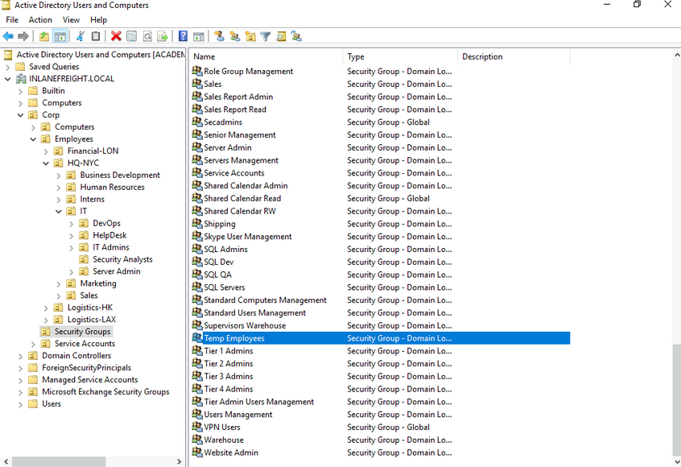
User accounts can be provisioned many rights in AD. They can be configured as basically read-only users who have read access to most of the environment up to Enterprise Admin and countless combinations in between. Because users can have so many rights assigned to them, they can also be misconfigured relatively easily and granted unintended rights that an attacker or a pentester can leverage. User accounts present an immense attack surface and are usually a key focus for gaining a foothold during a pentest. Users are often the weakest link in any organization. It is difficult to manage human behavior and account for every user choosing weak or shared passwords, installing unauthorized software, or admins making careless mistakes or being overly permissive with account management. To combat this, an organization needs to have policies and procedures to combat issues that can arise around user accounts and must have defense in depth to mitigate the inherent risk that users bring to the domain.
Local Accounts
... are stored locally on a particular server or workstation. These accounts can be assigned rights on that host either individually or via group membership. Any rights assigned can only be granted to that specific host and will not work across the domain. Local user accounts are considered security principals but can only manage access to and secure resources on a standalone host. There are several default local user accounts that are created on a Windows system:
- Administrator:
- this account has the SID
S-1-5-domain-500and is the first account created with a new Windows installation; it has full control over almost every resource on the system; it cannot be deleted or locked, but it can be disabled or renamed. Windows 10 and Server 2016 hosts disable the built-in administrator account by default and create another local account in the local administrator's group during setup
- this account has the SID
- Guest
- this account is disabled by default; the purpose of this account is to allow users without an account on the computer to log in temporarily with limited access rights; by default, it has a blank password and is generally recommended to be left disabled because of the security risk of allowing anonymous access to a host
- SYSTEM
- the SYSTEM (or NT AUTHORITY\SYSTEM) account on a Windows host is the default account installed and used by the OS to perform many of its internal functions; unlike the root account on Linux, SYSTEM is a service account and does not run entirely in the same context as a regular user; many of the processes and services running on a host are run under the SYSTEM context; one thing to note with this account is that a profile for it does not exist, but it will have permissions over almost everything on the host; it does not appear in User Manager and cannot be added to any groups; a SYSTEM account is the highest permission level one can achieve on a Windows host and, by default, is granted Full Control permissions to all files on a Windows system
- Network Service
- this is a predefined local account used by the Service Control Manager (SCM) for running Windows services; when a service runs in the context of this particular account, it will present credentials to remote services
- Local Service
- this is another predefined local account used by the SCM for running Windows servics; it is configured with minimal privileges on the computer and presents anonymous credentials to the network
Domain Users
... differ from local accounts in that they are granted rights from the domain to access resources such as file servers, printers, intranet hosts, and other objects based on the permissions granted to their user account or the group that account is a member of. Domain user accounts can log in to any host in the domain, unlike local users. One account to keep in mind is the KRBTGT account, however. This is a type of local account built into the AD infrastructure. This account acts as a service account for the Key Distribution service providing authentication and access for domain resources. This account is a common target of many attackers since gaining control or access will enable an attacker to have unconstrained access to the domain. It can be leveraged for PrivEsc and persistence in a domain through attacks such as the Golden Ticket attack.
User Naming Attributes
Security in AD can be improved using a set of user naming attributes to help identify user objects like logon name or ID. The following are a few important Naming Attributes in AD:
| UserPrincipalName | this is the primary logon name for the user; by convention, the UPN uses the email address of the user |
| ObjectGUID | this is a unique identifier of the user; in AD, the ObjectGUID attribute name never changes and remains unique even if the user is removed |
| SAMAccountName | this is a logon name that supports the previous version of Windows clients and servers |
| objectSID | the user's SID; this attribute identifies a user and its group memberships during security interactions with the server |
| sIDHistory | this contains previous SIDs for the user object if moved from another domain and is typically seen in migration scenarios from domain to domain; after a migration occurs, the last SID will be added to the sIDHistory property, and the new SID will become its objectSID |
Common User Attributes
PS C:\htb Get-ADUser -Identity htb-student
DistinguishedName : CN=htb student,CN=Users,DC=INLANEFREIGHT,DC=LOCAL
Enabled : True
GivenName : htb
Name : htb student
ObjectClass : user
ObjectGUID : aa799587-c641-4c23-a2f7-75850b4dd7e3
SamAccountName : htb-student
SID : S-1-5-21-3842939050-3880317879-2865463114-1111
Surname : student
UserPrincipalName : htb-student@INLANEFREIGHT.LOCAL
Domain-joined vs. Non-domain-joined Machine
Domain joined
Hosts joined to a domain have greater ease of information sharing within the enterprise and a central management point to gather resources, policies and updates from. A host joined to a domain will acquire any configurations or changes necessary through the domain's Group Policy. The benefit here is that a user in the domain can log in and access resources from any host joined to the domain, not just the one they work on. This is the typical setup you will see in enterprise environments.
Non-domain joined
Non-domain joined computers or computers in a workgroup are not managed by domain policy. With that in mind, sharing resources outside your local network is much more comlicated than it would be on a domain. This is fine for computers meant for home use or small business clusters on the same LAN. The advantage of this setup is that the individual users are in charge of any changes they wish to make to their host. Any user accounts on a workgroup computer only exist on that host, and profiles are not migrated to other hosts within the workgroup.
It is important to note that a machine account in an AD environment will have most of the same rights as a standard domain user account. This is important because you do not always need to obtain a set of valid creds for an individual user's account to begin enumerating and attacking a domain. You may obtain SYSTEM level access to a domain-joined Windows host through a successful RCE exploit or by escalating privileges on a host. This access is often overlooked as only useful for pillaging sensitive data on a particular host. In reality, access in the context of the SYSTEM account will allow you read access to much of the data within the domain and is a great launching point for gathering as much information as possible before proceeding with applicable AD-related attacks.
Groups
After users, groups are another significant object in AD. They can place similar users together and mass assign rights and access. Groups are another key target for attackers and pentesters, as the rights that they confer on their members may not be readily apparent but may grant excessive privileges that can be abused if not set up properly. There are many built-in groups in AD, and most organizations also create their own groups to define rights and privileges, further managing access within the domain. The number of groups in an AD environment can snowball an become unwieldy, potentially leading to unintended access if left unchecked. It is essential to understand the impact of using different group types and for any organization to periodically audit which groups exist within their domain, the privileges that these groups grant their members, and check for excessive group membership beyond what is required for a user to perform their day-to-day work.
One question that comes up often is the difference between Groups and OUs. OUs are useful for grouping users, and computers to ease management and deploying Group Policy settings to a specific object in the domain. Groups are primarily used to assign permissions to access resources. OUs can also be used to delegate administrative tasks to a user, such as resetting passwords or unlocking user accounts without giving them additional admin rights that they may inherit through group membership.
Types of Groups
In simpler terms, groups are used to place users, computers, and contact objects into management units that provide ease of administration over permissions and facilitate the assignment of resources such as printers and file share access.
Groups in AD have two fundamental characteristics: type and scope. The group type defines the group's purpose, while the group scope shows how the group can be used within the domain or forest. When creating a new group, you must select a group type. There are two main types: security and distribution groups.
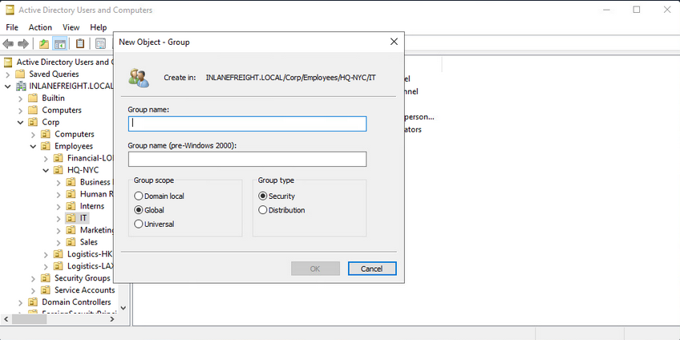
The Security Groups type is primarily for ease of assigning permissions and rights to a collection of users instead of one at a time. They simlify management and reduce overhead when assigning permissions and rights for a given resource. All users added to a security group will inherit any permissions assigned to the group, making it easier to move users in and out of groups while leaving the group's permissions unchanged.
The Distribution Groups type is used by email applications such as Microsoft Exchange to distribute messages to group members. They function much like mailing lists and allow for auto-adding emails in the "To" field when creating an email in Microsoft Outlook. This type of group cannot be used to assign permissions to resources in a domain environment.
Group Scopes
There are three different group scopes that can be assigned when creating a new group:
Domain Local Group
... can only be used to manage permissions to domain resources in the domain where it was created. Local groups cannot be used in other domains but can contain users from other domains. Local groups can be nested into other local groups but not within global groups.
Global Group
... can be used to grant access to resources in another domain. A global group can only contain accounts from the domain where it was created. Global groups can be added to both other global groups and local groups.
Universal Group
The universal group scope can be used to manage resources distributed across multiple domains and can be given permissions to any object within the same forest. They are available to all domains within an organization and can contain users from any domain. Unlike domain local and global groups, universal groups are stored in the Global Catalog (GC), and adding or removing objects from a universal group triggers forest-wide replication. It is recommended that administrators maintain other groups is less likely to change than individual user membership in global groups. Replication is only triggered at the individual domain level when a user is removed from a global group. If individual users and computers are maintained within universal groups, it will trigger forest-wide replication each time a change is made. This can create a lot of network overhead and potential for issues. Below is an example of the groups in AD and their scope settings. Please pay attention to some of the critical groups and their scope.
AD Group Scope Examples
PS C:\htb> Get-ADGroup -Filter * |select samaccountname,groupscope
samaccountname groupscope
-------------- ----------
Administrators DomainLocal
Users DomainLocal
Guests DomainLocal
Print Operators DomainLocal
Backup Operators DomainLocal
Replicator DomainLocal
Remote Desktop Users DomainLocal
Network Configuration Operators DomainLocal
Distributed COM Users DomainLocal
IIS_IUSRS DomainLocal
Cryptographic Operators DomainLocal
Event Log Readers DomainLocal
Certificate Service DCOM Access DomainLocal
RDS Remote Access Servers DomainLocal
RDS Endpoint Servers DomainLocal
RDS Management Servers DomainLocal
Hyper-V Administrators DomainLocal
Access Control Assistance Operators DomainLocal
Remote Management Users DomainLocal
Storage Replica Administrators DomainLocal
Domain Computers Global
Domain Controllers Global
Schema Admins Universal
Enterprise Admins Universal
Cert Publishers DomainLocal
Domain Admins Global
Domain Users Global
Domain Guests Global
<SNIP>
Group scopes can be changed, but there are a few caveats:
- a Global Group can only be converted to a Universal Group if it is not part of another Global Group
- a Domain Local Group can only be converted to a Universal Group if the Domain Local Group does not contain any other Domain Local Group as members
- a Universal Group can be converted to a Domain Local Group without any restrictions
- a Universal Group can only be converted to a Global Group if it does not contain any other Universal Group as members
Built-in vs. Custom Groups
Several built-in security groups are created with a Domain Local Group scope when a domain is created. These groups are used for specific administrative purposes. It is important to note that only user accounts can be added to these built-in groups included Domain Admins, which is a global security group and can only contain accounts from its own domain. If an organization wants to allow an account from domain B to perform administrative functions on a DC in domain A, the account would have to be added to the built-in Administrators group, which is a Domain Local Group. Though AD comes prepopulated with many groups, it is common for most organizations to create additional groups for their own purposes. Changes/additions to an AD environment can also trigger the creation of additional groups. For example, when Microsoft Exchange is added to a domain, it adds various different security groups to the domain, some of which are highly privileged and, if not managed properly, can be used to gain privileged access within the domain.
Nested Group Membership
Nested group membership is an important concept in AD. A Domain Local Group can be a member of another Domain Local Group in the same domain. Through this membership, a user may inherit privileges not assigned directly to their account or even the group they are directly a member of, but rather the group that their group is a member of. This can sometimes lead to unintended privileges granted to a user that are difficult to uncover without an in-depth assessment of the domain. Tools such as BloodHound are particularly useful in uncovering privileges that a user may inherit through one or more nestings of groups. This is a key tool for pentesters for uncovering nuanced misconfigurations and is also extremely powerful for sysadmins and the like to gain deep insights into the security posture of their domain(s).
Below is an example of privileges through nested group memberships. Though DCorner is not a direct member of Helpdesk Level 1, their membership in Help Desk grants them the same privileges that any member of Helpdesk Level 1 has. In this case, the privilege would allow them to add a member to the Tier 1 Admins group (GenericWrite). If this group confers any elevated privileges in the domain, it would likely be a key target for a pentester. Here, you could add your user to the group and obtain privileges that members of the Tier 1 Admins group are granted, such as local administrator access to one or more hosts that could be used to further access.
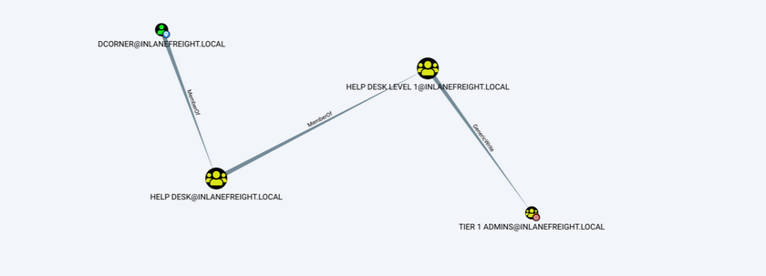
Important Group Attributes
Like users, groups have many attributes. Some of the most important group attributes include:
- cn (Common Name)
- is the name of the group in AD DS
- member
- which user, group, and contact objects are members of the group
- groupType
- an integer that specifies the group type and scope
- memberOf
- a listing of any groups that contain the group as a member
- objectSid
- this is the security identifier or SID of the group, which is the unique value used to identify the group as a security principal
Groups are fundamental objects in AD that can be used to group other objects together and facilitate the management of rights and access.
Rights and Privileges
... are the cornerstones of AD management and, if mismanaged, can easily lead to abuse by attackers or pentesters. Access rights and privileges are two important topics in AD, and you must understand the difference. Rights are typically assigned to users or groups and deal with permissions to acces an object as a file, while privileges grant a user permission to perform an action such as run a program, shut down a system, reset passwords, etc. Privileges can be assigned individually to users or conferred upon them via built-in or custom group membership. Windows computers have a concept called User Rights Assignment, which, while referred to as rights, are actually types of privileges granted to a user.
Built-in AD Groups
AD contains many default or built-in security groups, some of which grant their members powerful rights and privileges which can be abused to escalate privileges within a domain and ultimately gain Domain Admin or SYSTEM privileges on a DC. Membership in many of these groups should be tightly managed as excessive group membership/privileges is a common flaw in many AD networks that attackers look to abuse. Some of the most common built-in groups are listed below:
| Group Name | Description |
|---|---|
| Account Operators | members can create and modify most types of accounts, including those of users, local groups, and global groups, and members can log in locally to DCs; they cannot manage the Administrator account, administrative user accounts, or members of the Administators, Server Operators, Account Operators, Backup Operators, or Print Operators group |
| Administrators | members have full and unrestricted access to a computer or an entire domain if they are in this group on a DC |
| Backup Operators | membery can back up and restore files on a computer, regardless of the permissions set on the files; backup operators can also log on to and shut down the computer; members can log onto DCs locally and should be considered Domain Admins; they can make shadow copies of the SAM/NTDS database, which, if taken, can be used to extract creds and other juicy info |
| DnsAdmins | members have access to network DNS information; the group will only be created if the DNS server role is or was at one time installed on a DC in the domain |
| Domain Admins | members have full access to administer the domain and are members of the local administrator's group on all domain-joined machines |
| Domain Computers | any computers created in the domain are added to this group |
| DCs | contains all DCs within a domain; new DCs are added to this group automatically |
| Domain Guests | this group includes the domain's built-in Guest account; members of this group have a domain profile created when signing onto a domain-joined computer as a local guest |
| Domain Users | this group contains all user accounts in a domain; a new user account is created in the domain is automatically added to this group |
| Enterprise Admins | membership in this group provides complete configuration access within the domain; the group only exists in the root domain of an AD forest; members in this group are granted the ability to make forest-wide changes such as adding a child domain or creating a trust; the administrator account for the forest root domain is the only member of this group by default |
| Event Log Readers | members can read event logs on local computers; the group is only created when a host is promoted to a DC |
| Group Policy Creater Owners | members create, edit, or delete Group Policy Objects in the domain |
| Hyper-V Administrators | members have complete and unrestricted access to all the features in Hyper-V; if there are virtual DCs in the domain, any virtualization admins, such as members of Hyper-V Administrators, should be considered Domain Admins |
| IIS_IUSRS | this is a built-in group used by Internet Information Services (IIS), beginning with IIS 7.0 |
| Pre-Windows 2000 Compatible Access | this group exists for backward compatibility for computers running Windows NT 4.0 and earlier; membership in this group is often a leftover legacy configuration; it can lead to flaws where anyone on the network can read information from AD without requiring a valid AD username and password |
| Print Operators | members can manage, create, share, and delete printers that are connected to DCs in the domain along with any printer objects in AD; members are allowed to log on to DCs locally and may be used to load a malicious printer driver and escalate privileges within the domain |
| Protected Users | members of this group are provided additional protections against credential theft and tactics such as Kerberos abuse |
| Read-only DCs | contains all read-only DCs in the domain |
| Remote Desktop Users | this group is used to grant users and groups permission to connect to a host via RDP; this group cannot be renamed, deleted, or moved |
| Remote Management Users | this group can be used to grant users remote access to computers via WinRM |
| Schema Admins | members can modify the AD schema, which is the way all objects with AD are defined; this group only exists in the root domain of an AD forest; the administrator account for the forest root domain is the only member of this group by default |
| Server Operators | this group only exists on DCs; members can modify services, access SMB shares, and backup files on DCs; by default, this group has no members |
Server Operators Group Details
PS C:\htb> Get-ADGroup -Identity "Server Operators" -Properties *
adminCount : 1
CanonicalName : INLANEFREIGHT.LOCAL/Builtin/Server Operators
CN : Server Operators
Created : 10/27/2021 8:14:34 AM
createTimeStamp : 10/27/2021 8:14:34 AM
Deleted :
Description : Members can administer domain servers
DisplayName :
DistinguishedName : CN=Server Operators,CN=Builtin,DC=INLANEFREIGHT,DC=LOCAL
dSCorePropagationData : {10/28/2021 1:47:52 PM, 10/28/2021 1:44:12 PM, 10/28/2021 1:44:11 PM, 10/27/2021
8:50:25 AM...}
GroupCategory : Security
GroupScope : DomainLocal
groupType : -2147483643
HomePage :
instanceType : 4
isCriticalSystemObject : True
isDeleted :
LastKnownParent :
ManagedBy :
MemberOf : {}
Members : {}
Modified : 10/28/2021 1:47:52 PM
modifyTimeStamp : 10/28/2021 1:47:52 PM
Name : Server Operators
nTSecurityDescriptor : System.DirectoryServices.ActiveDirectorySecurity
ObjectCategory : CN=Group,CN=Schema,CN=Configuration,DC=INLANEFREIGHT,DC=LOCAL
ObjectClass : group
ObjectGUID : 0887487b-7b07-4d85-82aa-40d25526ec17
objectSid : S-1-5-32-549
ProtectedFromAccidentalDeletion : False
SamAccountName : Server Operators
sAMAccountType : 536870912
sDRightsEffective : 0
SID : S-1-5-32-549
SIDHistory : {}
systemFlags : -1946157056
uSNChanged : 228556
uSNCreated : 12360
whenChanged : 10/28/2021 1:47:52 PM
whenCreated : 10/27/2021 8:14:34 AM
As you can see above, the default state of the Server Operators group is to have no members and is a domain local group by default. In contrast, the Domain Admins group seen below has several members and service accounts assigned to it. Domain Admins are also Global groups instead of domain local.
Domain Admins Group Membership
PS C:\htb> Get-ADGroup -Identity "Domain Admins" -Properties * | select DistinguishedName,GroupCategory,GroupScope,Name,Members
DistinguishedName : CN=Domain Admins,CN=Users,DC=INLANEFREIGHT,DC=LOCAL
GroupCategory : Security
GroupScope : Global
Name : Domain Admins
Members : {CN=htb-student_adm,CN=Users,DC=INLANEFREIGHT,DC=LOCAL, CN=sharepoint
admin,CN=Users,DC=INLANEFREIGHT,DC=LOCAL, CN=FREIGHTLOGISTICSUSER,OU=Service
Accounts,OU=Corp,DC=INLANEFREIGHT,DC=LOCAL, CN=PROXYAGENT,OU=Service
Accounts,OU=Corp,DC=INLANEFREIGHT,DC=LOCAL...}
User Rights Assignment
Depending on their current group membership, and other factors such as privileges that administrators can assign via Group Policy (GPO), users can have various rights assigned to their account. Read more about it here. A fex examples include:
| Privilege | Description |
|---|---|
| SeRemoteInteractiveLogonRight | this privilege could give your target user the right to log onto a host via RDP, which could potentially be used to obtain sensitive data or escalate privileges |
| SeBackupPrivilege | this grants a user the ability to create system backups and could be used to obtain copies of sensitive system files that can be used to retrieve passwords such as the SAM and SYSTEM Registry hives and the NTDS.dit AD database file |
| SeDebugPrivilege | this allows a user to debug and adjust the memory of a process; with this privilege, attackers could utilize a tool such as Mimikatz to read the memory space of the Local System Authority (LSASS) process and obtain any creds stored in memory |
| SeImpersonatePrivilege | this privilege allows you to impersonate a token of a privileded account such as NT AUTHORITY\SYSTEM; this could be leveraged with a tool such as JuicyPotato, RogueWinRM, PrintSpoofer, etc., to escalate privileges on a target system |
| SeLoadDriverPrivilege | a user with this privilege can load and unload device drivers that could potentially be used to escalate privileges or compromise a system |
| SeTakeOwnershipPrivilege | this allows a process to take ownership of an object; at its most basic level, you could use this privilege to gain access to a file share on a share that was otherwise not accessible to you |
There are many techniques available to abuse user rights detailed here and here.
Viewing a User's Privilege
After logging into a host, typing the command whoami /priv will give you a listing of all user rights assigend to the current user. Some rights are only available to administrative users and can only be listed/leveraged when running an elevated CMD or PowerShell session. These concepts of elevated rights and User Account Control (UAC) are security features introduced with Windows Vista that default to restricting applications from running with full permissions unless absolutely necessary. If you compare and contrast the rights available to you as an admin in a non-elevated console vs. an elevated console, you will see that they differ drastically. First, look at the rights available to a standard AD user.
Standard Domain User's Rights
PS C:\htb> whoami /priv
PRIVILEGES INFORMATION
----------------------
Privilege Name Description State
============================= ============================== ========
SeChangeNotifyPrivilege Bypass traverse checking Enabled
SeIncreaseWorkingSetPrivilege Increase a process working set Disabled
You can see that the rights are very limited, and none of the "dangerous" rights outlined above are present. Next, take a look at a privileged user.
Domain Admin Rights Non-Elevated
You can see the following in a non-elevated console which does not appear to be anything more than available to the standard domain user. This is because, by default, Windows systems do not enable all rights to you unless you run the CMD or PowerShell console in an elevated context. This is to prevent every application from running with the highest possible privileges. This is controlled by UAC.
PS C:\htb> whoami /priv
PRIVILEGES INFORMATION
----------------------
Privilege Name Description State
============================= ==================================== ========
SeShutdownPrivilege Shut down the system Disabled
SeChangeNotifyPrivilege Bypass traverse checking Enabled
SeUndockPrivilege Remove computer from docking station Disabled
SeIncreaseWorkingSetPrivilege Increase a process working set Disabled
SeTimeZonePrivilege Change the time zone Disabled
Domain Admin Rights Elevated
If you enter the same command from an elevated PowerShell console, you can see the complete listing of rights available to you:
PS C:\htb> whoami /priv
PRIVILEGES INFORMATION
----------------------
Privilege Name Description State
========================================= ================================================================== ========
SeIncreaseQuotaPrivilege Adjust memory quotas for a process Disabled
SeMachineAccountPrivilege Add workstations to domain Disabled
SeSecurityPrivilege Manage auditing and security log Disabled
SeTakeOwnershipPrivilege Take ownership of files or other objects Disabled
SeLoadDriverPrivilege Load and unload device drivers Disabled
SeSystemProfilePrivilege Profile system performance Disabled
SeSystemtimePrivilege Change the system time Disabled
SeProfileSingleProcessPrivilege Profile single process Disabled
SeIncreaseBasePriorityPrivilege Increase scheduling priority Disabled
SeCreatePagefilePrivilege Create a pagefile Disabled
SeBackupPrivilege Back up files and directories Disabled
SeRestorePrivilege Restore files and directories Disabled
SeShutdownPrivilege Shut down the system Disabled
SeDebugPrivilege Debug programs Enabled
SeSystemEnvironmentPrivilege Modify firmware environment values Disabled
SeChangeNotifyPrivilege Bypass traverse checking Enabled
SeRemoteShutdownPrivilege Force shutdown from a remote system Disabled
SeUndockPrivilege Remove computer from docking station Disabled
SeEnableDelegationPrivilege Enable computer and user accounts to be trusted for delegation Disabled
SeManageVolumePrivilege Perform volume maintenance tasks Disabled
SeImpersonatePrivilege Impersonate a client after authentication Enabled
SeCreateGlobalPrivilege Create global objects Enabled
SeIncreaseWorkingSetPrivilege Increase a process working set Disabled
SeTimeZonePrivilege Change the time zone Disabled
SeCreateSymbolicLinkPrivilege Create symbolic links Disabled
SeDelegateSessionUserImpersonatePrivilege Obtain an impersonation token for another user in the same session Disabled
User rights increase based on the groups they are placed in or their assigned privileges. Below is an example of the rights granted to a Backup Operators group member. Users in this group have other rights currently restricted by UAC. Still, you can see from this command that they have the SeShutdownPrivilege, which means they can shut down a DC. This privilege on its own could not be used to gain access to sensitive data but could cause a massive service interruption should they log onto a DC locally.
Backup Operator Rights
PS C:\htb> whoami /priv
PRIVILEGES INFORMATION
----------------------
Privilege Name Description State
============================= ============================== ========
SeShutdownPrivilege Shut down the system Disabled
SeChangeNotifyPrivilege Bypass traverse checking Enabled
SeIncreaseWorkingSetPrivilege Increase a process working set Disabled
As attackers and defenders, you need to understand the rights that are granted to users via membership from built-in security groups in AD. It's not uncommon to find seemingly low privileged users added to one or more of these groups, which can be used to further access or compromise the domain. Access to these groups should be strictly controlled. It is typically best practice to leave most of these groups empty and only add an account to a group if a one-off action needs to be performed or a repetitive task needs to be set up. Any accounts added to one of the groups discussed in this section or granted extra privileges should be strictly controlled and monitored, assigned a very strong password or passphrase, and should be separate from an account used by a sysadmin to perform their day-to-day duties.
Security
General AD Hardening Measures
Microsoft Local Administrator Password Solution (LAPS)
Accounts can be set up to have their password rotated on a fixed internal. This free tool can be beneficial in reducing the impact of an individual compromised host in an AD environment. Organizations should not rely on tools like this alone. Still, when combined with other hardening measures and security best practices, it can be a very effective tool for local administrator account password management.
Audit Policy Settings (Logging and Monitoring)
Every organization needs to have logging and monitoring setup to detect and react to unexpected changes or activities that may indicate an attack. Effective logging and monitoring can be used to detect an attacker or unauthorized employee adding a user or computer, modifying an obbject in AD, changing an account password, accessing a system in an unauthorized or non-standard manner, performing an attack such as password spraying, or more advanced attacks such as modern Kerberos attacks.
Group Policy Security Settings
Group Policy Objects are virtual collections of policy settings that can be applied to specific users, groups, and computers at the OU level. These can be used to apply a wide variety of security policies to help harden AD. The following is a non-exhaustive list of the types of security policies that can be applied:
- Account Policies
- manage how user accounts can interact with the domain; these include the password policy, account lockout policy, and Kerberos-related settings such as the lifetime of Kerberos tickets
- Local Privileges
- these apply to a specific computer and include the security event audit policy, user rights assignments, and specific security settings such as the ability to install drivers, whether the administrator and guest accounts are enabled, renaming the guest and administrator accounts, preventing users from installing printers or using removable media, and a variety of network access and network security controls
- Software Restriction Policies
- settings to control what software can be run on a host
- Application Control Policies
- settigs to control which applications can be run by certain users/groups; this may include blocking certain users from running all executables, Windows Installer files, scripts, etc.; Administrators use AppLocker to restrict access to certain types of applications and files; it is not uncommon to see organizations block access to CMD and PowerShell for users that do not require them for their day-to-day job; these policies are imperfect and can often be bypassed but necessary for a defense-in-depth strategy
- Advanced Audit Policy Configuration
- a variety of settings that can be adjusted to audit activities such as file access or modification, account logon/logoff, policy changes, privilege usage, and more
Advanced Audit Policy
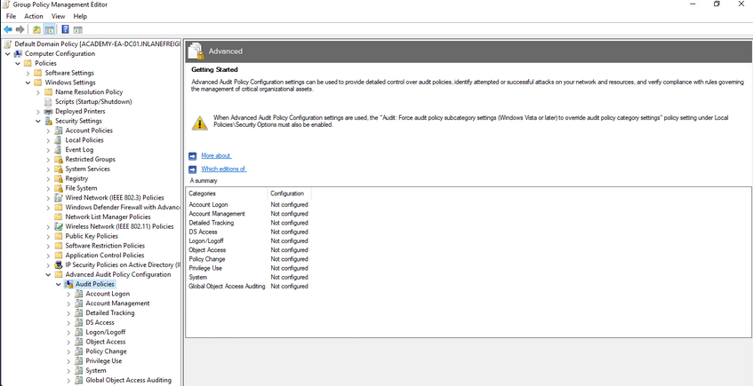
Update Management (SCCM/WSUS)
Proper patch management is critical for any organization, especially those running Windows/AD systems. The Windows Server Update Service (WSUS) can be installed as a role on a Windows Server and can be used to minimize the manual task of patching Windows systems. System Center Configuration Manager (SCCM) is a paid solution that relies on the WSUS Windows server role being installed and offers more features than WSUS on its own. A patch management solution can help ensure timely deployment of patches and maximize coverage, making sure that no hosts miss critical security patches. If an organization relies on a manual method for applying patches, it could take a very long time depending on the siuze of the environment and also could result in systems being missed and left vulnerable.
Group Managed Service Accounts (gMSA)
a gMSA is an account managed by the domain that offers a higher level of security than other types of service accounts for use with non-interactive applications, services, processes, and tasks that are run automatically but require credentials to run. They provide automatic password management with a 120 char password generated by the domain controller. The password is changed at a regular interval and does not need to be known by and user. It allows for creds to be used across mutliple hosts.
Security Groups
... offer an easy way to assign access to network resources. They can be used to assign specific rights to the group to determine what members of the group can do within the AD environment. AD automatically creates some default security groups during installation. Some examples are Account Operators, Administrators, Backup Operators, Domain Admins, and Domain Users. These groups can also be used to assign permission to access resources. Security groups help ensure you can assign granular permissions to users en masse instead of individually managing each user.
Built-in AD Security Groups
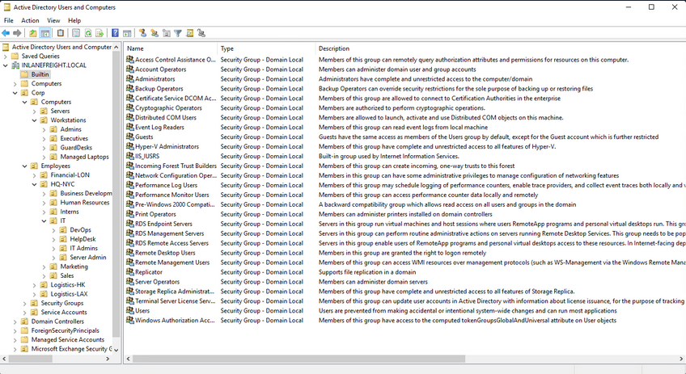
Account Separation
Administrators must have two separate accounts. One for their day-to-day work and a second for any administrative tasks they must perform. This can help ensure that if a user's host is compromised, the attacker would be limited to that host and would not obtain credentials for a highly privileged user with considerable access within the domain. It is also essential for the individual to use different passwords for each account to mitigate the risk of password reuse attacks if their non-admin account is compromised.
Password Complexity Policies + Passphrases + 2FA
Ideally, an organization should be using passphrases or large randomly generated passwords using an enterprise password manager. The standard 7-8 character passwords can be cracked offline very quickly with a GPU password cracking rig. Shorter, less complex passwords may also be guessed through a password spraying attack, giving an attacker a foothold in the domain. Password complexity rules alone in AD are not enough to ensure strong passwords. An organization should also consider implementing a password filter to disallow passwords containing the months or seasons of the year, the company name, and common words. The minimum password length for standard users should be at least 12 chars and ideally longer for administrators/service accounts. Another important security measure is the implementation of multi-factor authentication for remote desktop access to any host. This can help to limit lateral movement attempts that may rely on GUI access to a host.
Limiting Domain Admin Accout Usage
All-powerful Domain Admin accounts should only be used to log in to DCs, not personal workstations, jump hosts, web servers, etc. This can significantly reduce the impact of an attack and cut down potential attack paths should a host be compromised. This would ensure that Domain Admin account passwords are not left in memory on hosts throughout the environment.
Periodically Auditing and Removing Stale Users and Objects
It is important for an organization to periodically audit AD and remove or disable any unused accounts.
Auditing Permissions and Access
Organizations should also periodically perform access control audits to ensure that users only have the level of access required for their day-to-day work. It is important to audit local admin rights, the number of Domain Admins, and Enterprise Admins to limit the attack surface, file share access, user rights, and more.
Audit Policies & Logging
Visibility into the domain is a must. An organization can achieve this through robust logging and then using rules to detect anomalous activity or indicators that a Kerberoasting attack is being attempted. These can also be used to detect AD enumeration. It is worth familiarizing yourself with Microsoft's Audit Policy Recommendations to help detect compromise.
Using Restricted Groups
Restricted Groups allow for administrators to configure group membership via Group Policy. They can be used for a number of reasons, such as controlling membership in the local administrator's group on all hosts in the domain by restricting it to just the local Administator account and Domain Admins and controlling membership in the highly privileged Enterprise Admins and Schema Admins groups and other key administrative groups.
Limiting Server Roles
It is important not to install additional roles on sensitive hosts, such as installing the Internet Information Server role on a DC. This would increase the attack surface of the DC, and this type of role should be installed on a separate standalone web server. Some other examples would be not hosting web apps on an Exchange mail server and seperating web servers and database servers out to different hosts. This type of role separation can help to reduce the impact of a successful attack.
Limiting Local Admin and RDP Rights
Organizations should tightly control which users have local admin rights on which computers. This can be achieved using Restricted Groups.
More Best Practices
... can be found here.
Group Policy
... is a Windows feature that provides administrators with a wide array of advanced settings that can apply to both user and computer accounts in a Windows environment. Every Windows host has a Local Group Policy editor to manage local settings. Group Policy is a powerful tool for managing and configuring user settings, operating systems, and applications. Group Policy is also a potent tool for managing security in a domain environment. From a security context, leveraging Group Policy is one of the best ways to widely affect your enterprise's security posture. AD is by no means secure out of the box, and Group Policy, when used properly, is a crucial part of a defense-in-depth strategy.
While Group Policy is an excellent tool for managing the security of a domain, it can also be abused by attackers. Gaining rights over a Group Policy Object could lead to lateral movement, PrivEsc, and even full domain compromise if the attacker can leverage them in a way to take over d high-vale user or computer. They can also be used as a way for an attacker to maintain persistence within a network. Understanding how Group Policy works will give you a leg up against attackers and can help you greatly on pentests, sometimes finding nuanced misconfigurations that other penetration testers may miss.
GPOs
a GPO is a virtual collection of policy settings that can be applied to users or computers. GPOs include policies such as screen lock timeout, disabling USB ports, enforcing a custom domain password policy, installing software, managing applications, customizing remote access settings, and much more. Every GPO has a unique name and is assigned a unique identifier. They can be linked to a specific OU, domain, or site. A single GPO can be linked to multiple containers, and any container can have multiple GPOs applied to it. They can be applied to invidividual users, hosts, or groups by being applied directly to an OU. Every GPO contains one or more Group Policy settings that may apply at the local machine level or within the AD context.
RDP GPO Settings
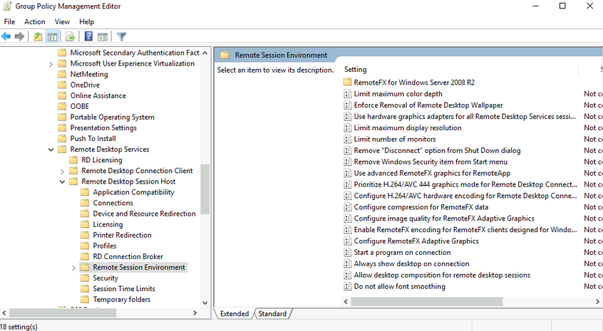
GPO settings are processed using the hierarchical structure of AD and are applied using the Order of Precedence rule as seen below:
GPO Order of Precedence
GPOs are processed from the top down when viewing them from a domain organizational standpoint. A GPO linked to an OU at the highest level in an AD network would be processed first, followed by those linked to a child OU, etc. This means that a GPO linked directly to an OU containing user or computer objects is processed last. In other words, a GPO attached to a specific OU would have precedence over a GPO attached at the domain level because it will be processed last and could run the risk of overriding settings in a GPO higher up in the domain hierarchy. One more thing to keep track of with precedence is that a setting configured in Computer policy will always have a higher priority of the same setting applied to a user. The following graphic illustrates presedence and how it is applied.
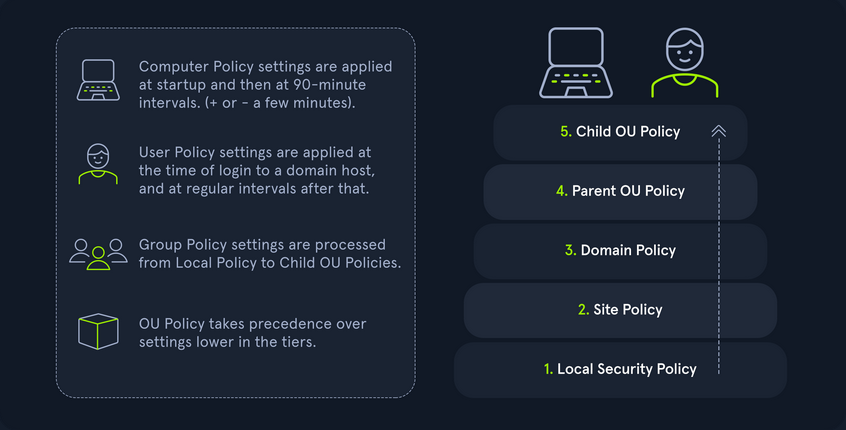
| Level | Description |
|---|---|
| Local Group Policy | the policies are defined directly to the host locally outside the domain; any setting here will be overwritten if a similar setting is defined at a higher level |
| Site Policy | any policies specific to the Enterprise Site that the host resides in; remember that enterprise environments can span large campuses and even across countries; so it stands to reason that a site might have its own policies to follow that could differentiate it from the rest of the organization; access control policies are a great example of this; say a specific building or site performs secret or restricted research and requires a higher level of authorization for access to resources; you could specify those settings at the site level and ensure they are linked so as not to be overwritten by domain policy; this is also a great way to perform actions like printer and share mapping for users in specific sites |
| Domain-wide Policy | any settings you wish to have applied across the domain as a whole; for example, setting the password policy complexity level, configuring a Desktop background for all users, and setting a Notice of Use and Consent to Monitor banner at the login screen |
| OUs | these settings would affect users and computers who belong to specific OUs; you would want to place any unique settings here that are role-specific; for example, the mapping of a particular share drive that can only be accessed by HR, access to specific resources like printers, or the ability for IT admins to utilize PowerShell and command-prompt |
| Any OU Policies nested within other OUs | settings at this level would reflect special permissions for objects within nested OUs; for example, providing Security Analysts a specific set of AppLocker policy settings that differ from the standard IT AppLocker settings |
You can manage Group Policy fromt the Group Policy Management Console, custom applications, or using the PowerShell GroupPolicy Module via command line. The Default Domain Policy is the default GPO that is automatically created and linked to the domain. It has the highest precedence of all GPOs and is applied by default to all users and computers. Generally, it is best practice to use this default GPO to manage default settings that will apply domain-wide. The Default DCs policy is also created automatically with a domain and sets baseline security and auditing settings for all DCs in a given domain. It can customized as needed, like any GPO.
Look at another example using the Group Policy Management Console on a DC. In this image, you see several GPOs. The Disable Forced Restarts GPO will have precedence over the Logon Banner GPO since it would be processed last. Any settings configured in the Disable Forced Restarts GPO could potentially override settings in any GPOs higher up in the hierarchy.
GPMC Hive Example
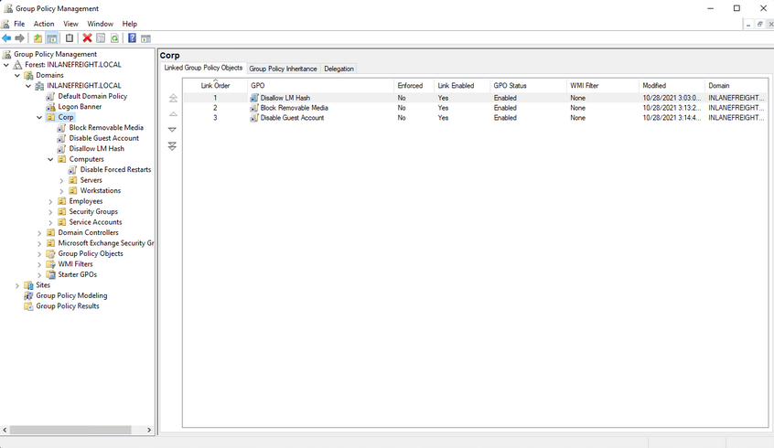
This image also shows an example of several GPOs being linked to the Corp. If this option is set, policy settings in GPOs linked to lower OUs cannot override the settings. If a GPO is set at the domain level with the Enforced option selected, the settings contained in that GPO will be applied to all OUs in the domain and cannot be overridden by lower-level OU policies. In the past, this setting was called No override and was set on the container in question under AD users and computers. Belowe you can see an example of an Enforced GPO, where Logon Banner GPO is taking precedence over GPOs linked to lower OUs and therefore will not be overridden.
Enforced GPO Policy Precedence
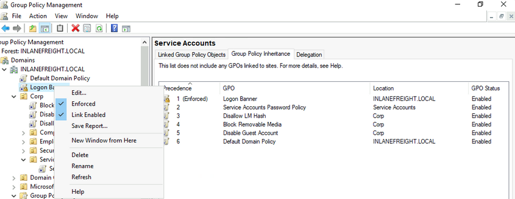
Regardless of which GPO is set to enforced, if the Default Domain Policy GPO is enforced, it will take precedence over all GPOs at all levels.
Default Domain Policy Override
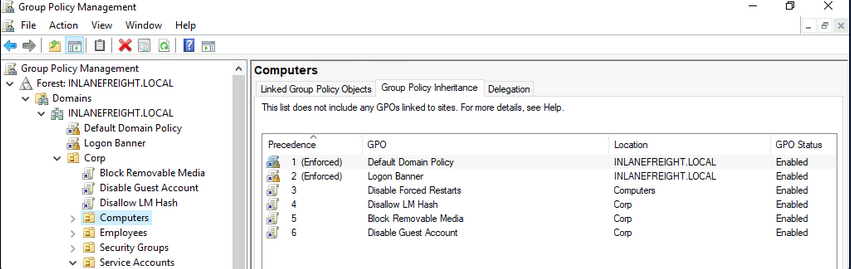
It is also possible to set the "Block inheritance" option on an OU. If this is specified for a particular OU, then policies higher up will not be applied to this OU. If both options are set, the "No override" option has precedence over the "Block inheritance" option. Here is a quick example. The Computers OU is inheriting GPOs set on the Corp OU in the below image.
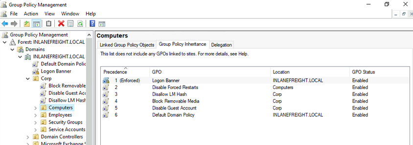
If the "Block inheritance" option is chosen, you can see that the 3 GPOs applied higher up to the Corp OU are no longer enforced on the Computers OU.
Block Inheritance
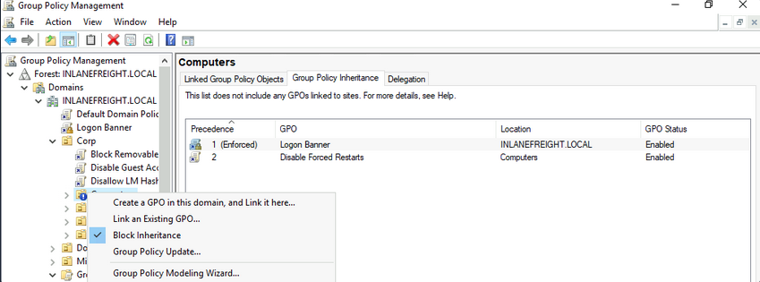
Group Policy Refresh Frequency
When a new GPO is created, the settings are not automatically applied right away. Windows performs periodic Group Policy updates, which by default is done every 90 minutes with a randomized offset of +/- 30 minutes for users and computers. The period is only 5 minutes for DCs to update by default. When a new GPO is created and linked, it could take up to 2 hours until the setings take effect. This random offset of +/- 30 minutes is set to avoid overwhelming DCs by having all clients request Group Policy from the DC simultaneously
It is possible to change the default refresh interval within Group Policy itself. Furthermore, you can issue the command gpupdate /force to kick off the update process. This command will compare the GPOs currently applied on the machine against the DC and either modify or skip them depending on if they have changed since the last automatic update.
You can modify the refresh rate interval via Group Policy by clicking on "Computer Configuration", "Policies", "Administrative Templates", "System", "Group Policy" and selecting "Set Group Policy refresh interval for computers". While it can be changed, it should not be set to occur too often, or it could cause network congestion leading to replication issues.
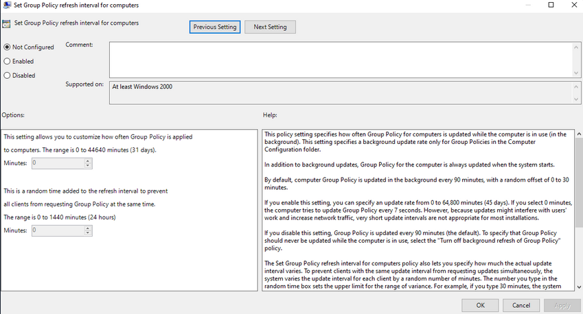
Security Considerations of GPOs
GPOs an be used to carry out attacks. These attacks may include adding additional rights to a user account that you control, adding a local administrator to a host, or creating an immediate scheduled task to run a malicious command such as modifying group membership, adding a new admin account, establishing a reverse shell connection, or even installing targeted malware throughout a domain. These attacks typically happen when a user has the rights required to modify a GPO that applies to an OU that contains either a user account that you control or a computer.
Below is an example of a GPO attack path identified using the BloodHound tool. This example shows that the Domain Users group can modify the Disconnect Idle RDP GPO due to nested group membership. In this case, you would next look to see which OUs this GPO applies to and if you can leverage these rights to gain control over a high-value user or computer and move laterally to escalate privileges within the domain.
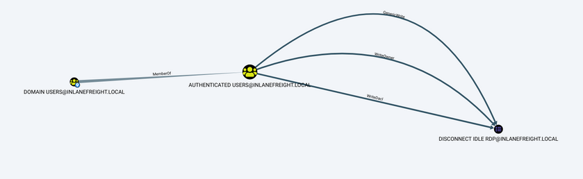